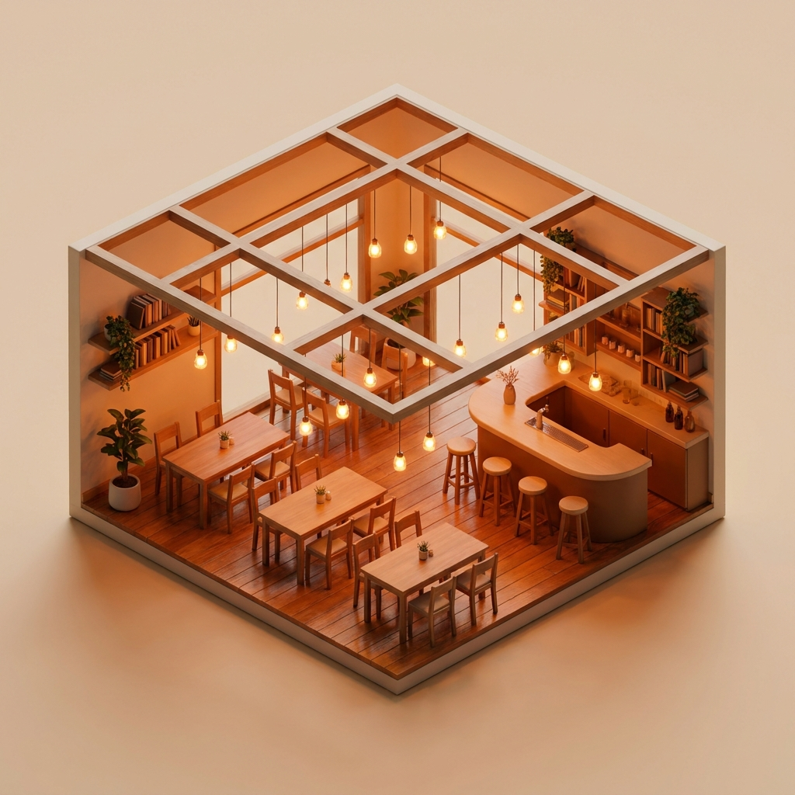

Знайте о своём деле по цифрам, а не на глаз
OSHBOARD — касса, склад, персонал и отчёты в одной программе. Три готовых уклада: ресторан и кафе, магазин и аптека, клининговая компания. Работает без интернета, говорит по-русски, по-узбекски и по-английски.

Деньги уходят там, куда не смотрят
Пока учёт лежит в тетради и в голове, решения принимаются на ощупь. И беда не в том, что цифр нет совсем, — беда в том, что они есть, но неверные.
вместо прибыли
Кажется, что заработали
Касса показывает выручку минус закупку и называет это прибылью. Аренда, свет и зарплаты в счёт не идут — и месяц, закрытый в минус, выглядит удачным.
только на бумаге
Кажется, что товар есть
Продали, но не списали; списали, но не записали. К инвентаризации сходится далеко не всё, а разницу списывают на «усушку».
в отдельной тетради
Кажется, что расходы известны
Людям платят каждый месяц, а в отчёте этих денег нет. Самая большая трата фирмы оказывается единственной, которую никто не считает.
Одна программа, но говорит на языке вашего дела
Это не универсальная касса, в которой ресторан и магазин видят одни и те же кнопки. При заведении вы выбираете вид дела — и программа перестраивается целиком: разделы, слова, отчёты и даже названия должностей.
Ресторан и кафе
План зала со столами, касса официанта, экран кухни, счета и разделение чека, бронь, QR-меню и онлайн-заказы. Тех-карты считают себестоимость блюда, фудкост показывает, что готовить невыгодно.
Магазин, аптека, одежда
Касса со сканером штрихкодов, приёмка, инвентаризация, печать ценников, сроки годности для аптеки, размеры и модели для одежды. Кассовая смена с пересчётом денег в ящике.
Клининговая компания
Заявки и маршрут дня, договоры на постоянные объекты, воронка клиентов, акт с подписью на экране. Бригады с закреплённым инвентарём и вечерней перекличкой вещей, расход материалов, оплата труда бригад.
Одна учётная запись — сколько угодно заведений разного вида. Переключение сверху, в одно нажатие: утром смотрите ресторан, днём магазин.
Всё, чем живёт заведение — в одной программе
Касса, склад, люди, деньги и отчёты связаны между собой. Пробили чек — уменьшился остаток на складе, посчиталась себестоимость, изменилась прибыль в отчёте. Ничего не нужно переносить руками.
Касса, которая не встанет
В зале — план столов и счета, в магазине — сканер штрихкодов и денежный ящик. Пропал интернет: касса продолжает пробивать чеки и запоминает их, а когда связь вернётся — сама догонит. Дважды одна продажа при этом не спишется.
Отчёт, которому можно верить
Чистая прибыль считается после всего: выручка минус себестоимость проданного, минус расходы, минус зарплаты. Каждый вычет стоит отдельной строкой — итог можно проверить сложением, а не принимать на веру.
Для бухгалтера — таблицей
Приход и расход по дням, расходы по статьям, зарплаты за период. Выгрузка в Excel и печать. Это не декларация — это понятная таблица с расшифровкой, которую бухгалтер переносит куда ему нужно.
Склад и себестоимость
Приёмка, остатки, инвентаризация, списания и потери. Тех-карты считают себестоимость блюда по ингредиентам, фудкост показывает, что готовить невыгодно. Магазину — приёмка по накладной и печать ценников.
Люди, смены и зарплата
Кто на смене, кто опоздал, план смен на месяц. Оклад, ставка за смену или процент; авансы и выплаты. В клининге в зарплатах стоят и те, у кого нет входа в программу — уборщицы и мойщики окон.
Когда приходят гости
Видно, в какие часы и дни поток большой, а когда пусто. По этим цифрам ставят смены и запускают акции не наугад. У магазина — то же самое по чекам, у клининга — загруженность бригад по дням.
Что продаётся, а что лежит
Хиты и аутсайдеры, наценка по каждой позиции. Понятно, что убрать из меню, а что поставить на видное место. Для магазина отдельно видно, сколько денег лежит на складе по себестоимости.
Telegram-уведомления
Сотрудник получает новую заявку прямо в Telegram, руководитель — сводку за день. Не нужно держать программу открытой, чтобы не пропустить срочное.
QR-меню и онлайн-заказы
Гость наводит телефон на наклейку и видит меню с фотографиями. Заказ на доставку или самовывоз приходит сразу в программу. Магазину — каталог товаров по такой же ссылке.
Камеры и тепловая карта
Камеры зала в одном окне с программой. Тепло-навигатор показывает, где гости сидят охотнее, а какие столы простаивают.
AI-помощник
Спрашиваете обычными словами: «почему упала выручка на этой неделе», «какие блюда убрать», «сколько фирма должна вернуть сотрудникам» — и получаете ответ по своим цифрам.
На телефоне и на компьютере
Ставится значком на телефон — как обычное приложение, без магазина приложений. Для кассы есть отдельная программа под Windows: своё окно, свой значок, можно в автозапуск.
AI-ассистент внутри системы
Спросите обычными словами: «Почему упала выручка в четверг?» или «Какое блюдо приносит меньше всего прибыли?» — ассистент проанализирует данные и даст ответ с рекомендацией.

Понятная аналитика — на любом экране
Дашборды, отчёты и графики, в которых разберётся даже тот, кто далёк от цифр.

Дашборд продаж
Выручка, средний чек и динамика в реальном времени.

Отчёты по сменам
Кто и сколько продал, KPI официантов и поваров.

Аналитика меню
Хиты, аутсайдеры и маржа по каждому блюду.
Тепло-навигатор зала через камеру
Подключаем датчик к вашей камере — и в приложении вы видите не просто трекинг, а тепловую карту зала: где скапливаются гости, какие столы «горячие», а какие простаивают.
- Тепловая карта посадки и проходимости в реальном времени
- Видно «мёртвые» зоны зала — можно переставить столы
- Подключается к обычной камере — без дорогого оборудования
- Докупается к «Старт» и «Бизнес», в «Премиум» — уже включён

Кому это подходит
От чайханы на десять столов до сети магазинов и клининговой фирмы с бригадами. Уклад выбирается при заведении — и дальше человек видит только то, что нужно его делу.

Рестораны и чайханы
Зал, кухня, официанты, банкеты

Кофейни и фастфуд
Скорость на кассе и анализ блюд

Магазины и аптеки
Штрихкоды, остатки, сроки годности

Клининговые фирмы
Заявки, бригады, инвентарь, акты
Почему выбирают OSHBOARD
Программу делают здесь, в Самарканде, под то, как дело ведут в Узбекистане: с перебоями связи, с наличными, на трёх языках и без дорогого оборудования.
Интернет пропал — работа нет
Касса продолжает пробивать чеки и запоминает их у себя. Связь вернулась — всё догоняется само, и ни одна продажа не спишется дважды.
Прибыль без самообмана
Из выручки вычитается себестоимость проданного, расходы и зарплаты. Многие программы называют прибылью наценку — и владелец считает себя богаче, чем есть.
Три языка целиком
Не только меню, но и каждая ошибка, каждая подсказка, каждая строка отчёта. Кассир-узбек работает по-узбекски, а не догадывается по кнопкам.
445 проверок перед выкладкой
Каждое обновление прогоняется через автоматические проверки: не разошлись ли отчёты, не потерялись ли деньги. Не прошло — не выкладывается.
AI-помощник
Спрашиваете обычными словами о своих цифрах — отвечает по вашим данным, а не общими советами из интернета.
Поддержка на месте
Мы в Самарканде. Не колл-центр в другой стране и не переписка на чужом языке — приедем и покажем.
OSHBOARD против обычной кассы
Обычная касса просто принимает оплату. OSHBOARD ещё и показывает, где вы теряете, а где зарабатываете.
Тариф под размер вашего дела
Цены ориентировочные. Точную стоимость считаем под ваше дело: сколько точек, сколько людей, нужны ли камеры. Для магазинов и клининга подбираем отдельно — там счёт идёт не по площади. Оставьте заявку, посчитаем.
Старт
- Касса и работа без интернета
- Склад, остатки, себестоимость
- Смены, явка и зарплаты
- Отчёт с настоящей прибылью
- Тепло-навигатор (докупается)
Бизнес
- Всё из «Старт»
- Таблица для бухгалтера и Excel
- Несколько заведений в одном входе
- AI-помощник и Telegram-уведомления
- Тепло-навигатор (докупается)
Премиум
- Всё из «Бизнес»
- Тепло-навигатор включён
- Сколько угодно точек и людей
- Поддержка вне очереди
- Персональный менеджер
➕ Доп. модуль: датчик «Тепло-навигатор»
Подключается к камере и превращает обычный трекинг в тепловую карту зала. Доступен к тарифам «Старт» и «Бизнес», в «Премиум» уже входит бесплатно.
Запуск за 4 простых шага
Заявка
Оставляете заявку — связываемся и показываем программу на ваших цифрах, а не на выдуманном примере.
Перенос
Заносим то, что у вас уже есть: меню или товары, столы или объекты, людей и их оклады. Тетрадь переписывать не придётся.
Обучение
Показываем команде на её же языке. Кассиру хватает получаса: экран кассы сделан так, чтобы в него не надо было вчитываться.
Работа
Работаете и видите цифры сразу. Мы рядом: вопросы решаем без выходных, раз в месяц смотрим, всё ли в порядке.
Частые вопросы
Подойдёт ли для магазина или клининга, а не для ресторана?
Что будет, если пропадёт интернет?
Нужно ли покупать дорогое оборудование?
Мои сотрудники плохо знают русский. Смогут работать?
Кто увидит мои деньги?
Чем ваш отчёт лучше того, что показывает касса?
Что такое тепло-навигатор?
Мои данные никуда не денутся?
Сколько стоит и есть ли скрытые платежи?
Вы работаете по всему Узбекистану?
Новости и обновления
Готовы навести порядок в цифрах?
Оставьте заявку — покажем OSHBOARD на вашем меню и рассчитаем точную цену под ваше заведение.
- Бесплатная демонстрация на вашем меню
- Перезвоним в течение 15 минут
- Поможем с запуском и обучением команды